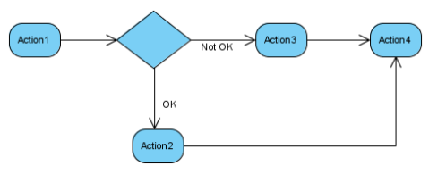
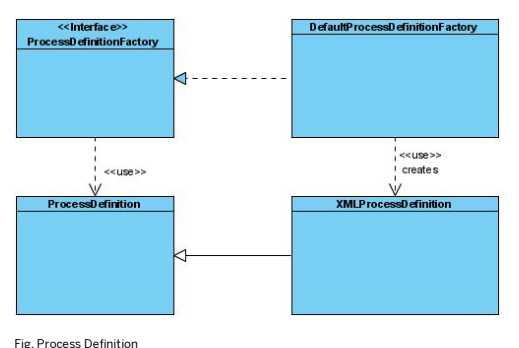
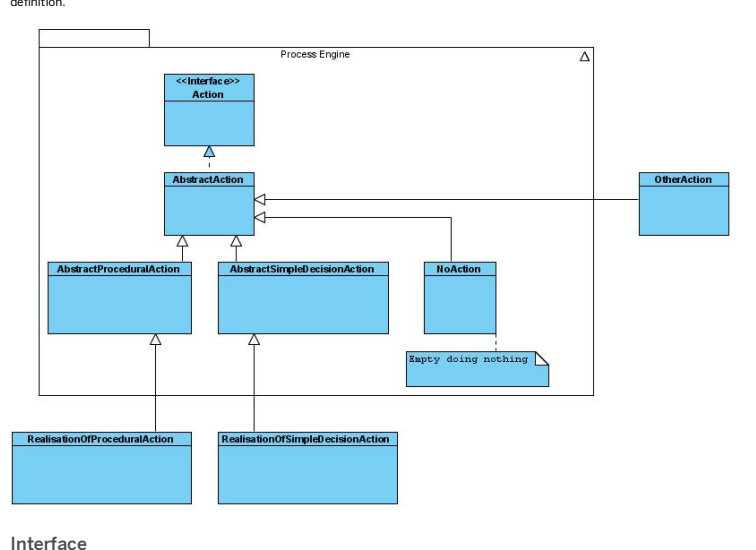
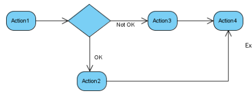
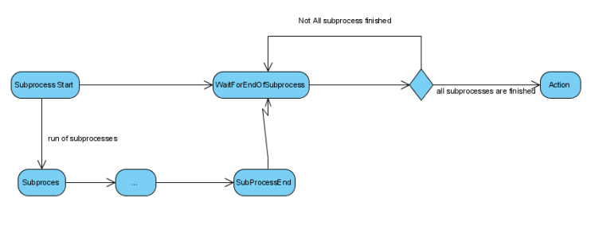
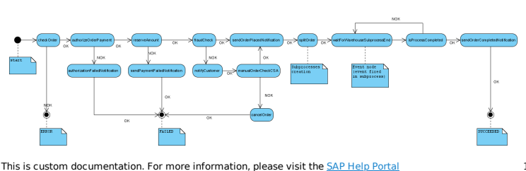
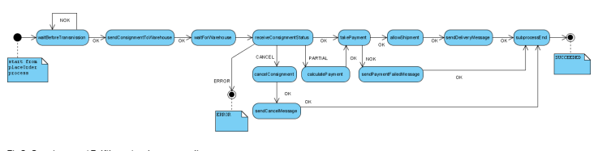
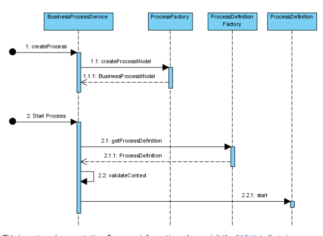
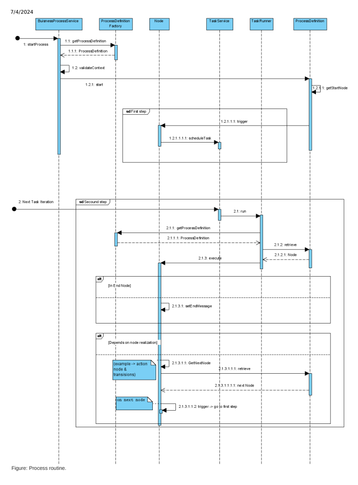

The processengine enables you to dene business processes through XML process denitions, and runs these processes in an asynchronous way. It guarantees that actions are performed in the right order and on the right condition. A new process can be created for each process denition. It is then possible to manage these processes by using their own context.
The processengine delivers a solution for waiting for events, notifying users or user groups, ring actions (dened in spring beans), and ow decisions based on action results.
It is a good idea to study Java and XML les in the yacceleratorfulfilmentprocess extension. This is an illustration of the fulllment process and neatly demonstrates how to create a process.
The processengine represents an engine to build and interpret a memory structure of a process. This memory representation is based on nodes. To build a correct object tree, a processdefinition.xsd le is used by JAXB. The result of this processing is a map that relates nodes and their IDs. Information about the node ID that is the next one in the process is stored in different ways for different nodes. Wait, notify, and split nodes have their next nodes explicitly listed. In case of alternatives, use the action node.
Its execution path logic is described further below.
When starting to work with the processengine, it is advisable to do a business analysis rst.

<?xml version="1.0" encoding="utf-8"?>
<process xmlns="http://www.hybris.de/xsd/processdefinition" name="Example" start="Action1">
<action id="Action1" bean="Action1">
<transition name="OK" to="Action2"/>
<transition name="NOK" to="Action3"/>
</action>
<action id="Action2" bean="Action2">
<transition name="OK" to="Action4"/>
</action>
<action id="Action3" bean="Action3">
<transition name="OK" to="Action4"/>
</action>
<action id="Action4" bean="Action4">
<transition name="OK" to="success"/>
</action>
<end id="success" state="SUCCEEDED">Everything was fine</end>
</process>
2. Next, dene the beans in |your_extension_name|-spring.xml le.
<bean id="Action1" class="org.training.actions.Action1" parent="abstractAction"/> <bean id="Action2" class="org.training.actions.Action2" parent="abstractAction"/> <bean id="Action3" class="org.training.actions.Action3" parent="abstractAction"/> <bean id="Action4" class="org.training.actions.Action4" parent="abstractAction"/>3. Finally implement the actions classes. Below nd the example of implementation of the Action1. package org.training.actions;public class Action1 extends AbstractSimpleDecisionAction { @Override public Transition executeAction(final BusinessProcessModel process) { if(.......) { return Transition.NOK; } else { return Transition.OK; } } } ## Support For Scripts In Business Process With support for scripting and the dynamic process denition, it is possible to declare not only the structure of the business process but also to dene the the behavior directly in the XML le that denes the process. ## Calling A Script Here is an example of a process denition with a script that returns the next transition: <?xml version='1.0' encoding='utf-8'?>
<?xml version='1.0' encoding='utf-8'?>
<process xmlns='http://www.hybris.de/xsd/processdefinition' start='action0' name='testProcessDefiniti>
<contextParameter name='testParameter' use='required' type='java.lang.String'/>
<scriptAction id='action0'>
<script type='javascript'>
var parameter = process.contextParameters.get(0);
parameter.setValue('changedFromScript');
modelService.save(parameter);
'itworks'
</script>
<transition name='itworks' to='success'/>
</scriptAction>
<end id='success' state='SUCCEEDED'>Everything was fine</end>
</process>
By default, the system doesn't restart business processes with nodes that are being run as. It creates a request before each restart to check whether there are any business processes with running nodes. If such processes exist, the system doesn't restart them to ensure that that there are no processes with doubled instances of the same nodes running at the same time. As a result, the existing data model isn't broken by concurrent business processes.
Use the following properties to set the number of retires and milliseconds between attempts to request a business process restart: processengine.process.restart.retries=3 processengine.process.restart.millis=500 The default values are 3 retries and 500 milliseconds. The following property ensures that the system throws an exception when requests for restarting business processes fail: processengine.process.restart.exception.if.failed=true The property is set to true by default.
If you want the system to allow restarting business processes without any validation of currently running processes, use the following property with the value true: processengine.process.restart.legacy=true
Enabling the processengine.process.restart.legacy=true property can lead to corrupt behavior caused by processes being run at the same time after being restarted.
To make business processes more resilient in case of database outages or node failures, use the following property: mark.process.as.done.enabled=true The property is enabled by default.
The property ensures that task instances are no longer connected to any business processes when business logic is successfully carried out. It also removes all conditions related to tasks and sets the value of the TaskModel.RUNNERBEAN property to passthroughRunner. If the process of removing a given task isn't successful, the passthroughRunner bean does nothing with it during any attempts to carry it out again, allowing the task to be removed smoothly by the task service.
The process denition denes a set of nodes that are connected with each other through their IDs.
To create a new process instance, call the createProcess method from the BusinessProcessService service. You can then run this service using the startProcess method. If a process denition has not been created before, the ProcessDenitionFactory will create one in this step.
businessProcessService.startProcess(id, processName); The process denition denes a set of nodes that are connected with each other through their IDs. The process denition starts with the process header. To make the process denition visible to the ProcessDenitionFactory, it is necessary to declare it as a resource in Spring.

The Spring denition of a process is straightforward:
<bean id="placeorderProcessDefinitionResource" class="de.hybris.platform.processengine.definition.ProcessDefinitionResource">
<property name="resource" value="classpath:/processdemo/placeorder.xml"/>
</bean>
The table below explains the meaning of the current
| Attribute | Description |
|---|---|
| id | This attribute needs to be unique in Spring |
| class | This attribute should always be as presented. It is the indicator for the ProcessDenitionFactory; where to search for beans in the Spring context for process denitions. |
The
| Attribute | Description |
|---|---|
| name | The name of the property is: resources. The name indicates the value of this property shows where in the le system the process denition XML le is located. |
| value | The value attribute contains the actual path to the process denition XML le. |
<bean id="checkOrder" class="de.hybris.platform.fulfilment.actions.CheckOrder" parent="abstractAction">
<property name="checkOrderService" ref="checkOrderService"/>
</bean>
The table below explains the meaning of the current | Attribute | Description |
|---|---|
| id | This attribute is important as it relates the Spring bean with the action node. |
| class | This attribute points to the class name that realizes the action interface. |
| parent | This attribute is only used for information. |
After the process is dened, content must be added to the process. A process is described by a set of nodes, which represent the steps in a given process. Each node, excluding the end node, needs to dene which node has to be invoked next in the workow.
The most important eld in each node is its ID. This is the key that joins two nodes in a workow.
Remember The start attribute in the process root tag should point to one of the declared nodes Action Node Action nodes are the nodes that realize the process logic.
Example:
<action id="isProcessCompleted" bean="subprocessesCompleted">
<transition name="OK" to="sendOrderCompletedNotification"/>
<transition name="NOK" to="waitForWarehouseSubprocessEnd"/>
</action>
The bean attribute points to the bean id declared in the spring.xml le. It denes which action will be red. For details, see the the Actions section below. The table below shows the attributes of the | Attribute | Description |
|---|---|
| name | Tells the result of an action. |
| to | Tells the Process Engine to which node the process should go after the result of an action is returned. |
Wait Node Wait nodes are used to communicate with the external environment. Use this node if somewhere in the process you need to wait for an external process result. It is also used if waiting for subprocesses to nish their routine. Example:
ConsignmentSubprocessEnd is an event that you need to trigger by using de.hybris.platform.processengine.BusinessProcessService.triggerEvent(String).
Process is a process which waits for the event specied in the event parameter.
N.B.: In the expression language you have two variables: process: the current instance of BusinessProcessModel
params: a Map with the current process parameters
There is also an option to provide additional information called choice when triggering an event. Based on the choice, a process may transit to different nodes. Here is an example of using a wait node with multiple choices:
<wait id='waitNode' then='nothingChoosen' prependProcessCode='false'>
<case event='eventWithChoice'>
<choice id='first_choice' then='firstChoiceChoosen'/>
<choice id='second_choice' then='secondChoiceChoosen'/>
</case>
</wait>
If you trigger an event without choice, the business process will transit to a node dened by the then argument ('nothingChoosen' in a given example). To trigger an event with choice, you can use the de.hybris.platform.processengine.BusinessProcessService.triggerEvent(BusinessProcessEvent) method.
Here is an example showing how to trigger event with given choice: final BusinessProcessEvent event = BusinessProcessEvent.builder("eventWithChoice").withChoice(" businessProcessService.triggerEvent(event);
You can dene a timeout on the wait node. When the node with dened timeout doesn't receive an event within a dened time, the transition congured on timeout element will be performed. Here is an example denition of a wait node with a dened timeout: This is For more the SAP Help 8
The delay format is dened by duration component of ISO 8601 standard.
Split Node
Use of split nodes is discouraged.
The Split node is used when a process needs to run actions or strings of actions in parallel.
Example:
Use this node if there is need to inform a user group or a particular user of a state of a process.
Example:
<notify id="notifyadmingroup" then="split">
<userGroup name="admingroup" message="Perform action"/>
<userGroup name="othergroup" message="other message"/>
</notify>
The attribute then of the | Attribute | Description |
|---|---|
| name | The group of users to which a message (one after other) has to be sent. There can be several |
| message | Based on the presented example, after a member of the admingroup has committed a message, a message for othergroup is generated. After this message has also been committed the process is informed and the next node (in this example split) is executed. |
This node ends the process and stores state and message in a process item.
<end id="error" state="ERROR">All went wrong.</end> <end id="success" state="SUCCEEDED">Everything was fine</end>The state attribute tells a process state set after the node is executed. The content of this element, for example All went wrong., is a sample message stored in a process item.
Actions are the most important part of the processengine functionality. Normally, they have to implement a logic or call specialized services to execute tasks that are necessary in a process. An Action performs a single piece of work within a process.
Usually an action acts upon input data which has been fed into the engine or has been produced by previous actions. Each action produces an action result, which enables the engine to direct the process to the next action. Each action is part of the process

The Action Interface has two methods:
Set
Stringexecute(BusinessProcessModel process)throwsRetryLaterException, Exception; This method is used to implement the main logic of an action. The reason for having separated RetryLaterException is that this exception is meant to inform the engine to re an action once again.
This is For more the SAP Help 10 In addition, there are two codes that an action could return outside of the normal action procedure: RETRY_RETURN_CODE - same as throwing RetryLaterException ERROR_RETURN_CODE - same as throwing another Exception
The transitions dene the target for the next step of a process. The action result determines the route.
Example:

Example workow should be dened like this
<?xml version="1.0"encoding="utf-8"?>
Of course bean and action ID do not need to be the same.
To make an action implementation easy, dene an abstractAction that implements useful routines in action implementation, such as de.hybris.platform.processengine.action.AbstractAction.
There is a set of methods for logging both messages and errors, as well as getters and setters for ModelService, ProcessParameterHelper, and at the end: getProcessParameterValue: Gets a parameter stored in the process context
setOrderStatus: Sets a status of the order createTransitions: Creates a set of transitions for lists of strings
There are also two additional templates to use for a procedural or simple decision action:
AbstractProceduralAction: It simply returns OK whatever happens. It is useful to split a Process into smaller pieces.
Only an implementation of the execute method is necessary.
AbstractSimpleDecisionAction: It returns one of OK or NOK values. It is useful to make a simple decision. Transitions are dened and only the execute method must be implemented.
If an action should be executed once again, the RetryLaterException exception or RETRY_RETURN_CODE could be returned.
To run a sub-process, simply call the BusinessProcessService.startProcess. Use events to inform the parent process

that a subprocess has ended. To re an event, use de.hybris.platform.processengine.BusinessProcessService.triggerEvent(String) Example:
With support for scripting and the dynamic process denition, it is possible to declare not only the structure of the business process but also to dene the behavior directly in the xml which denes the process.
Here is an example of a process denition with a script that returns the next transition: <?xml version='1.0' encoding='utf-8'?>
<process xmlns='http://www.hybris.de/xsd/processdefinition' start='action0' name='testProcessDefiniti>
<scriptAction id='action0'>
<script type='javascript'>(function() { return 'itworks' })()</script>
<transition name='itworks' to='success'/>
</scriptAction>
<end id='success' state='SUCCEEDED'>Everything was fine</end>
</process>
This simple process definition shows the usage of a scriptAction element. It is almost exactly the same as an action element, but instead of executing some logic from a spring bean, it executes the script defined in a script element. Here it only invokes an anonymous function that returns the next transition (**'itworks'**).
## Accessing A Business Process Context From A Script
This is For more the SAP Help 12 Scripts from process definitions are invoked with a special process parameter passed to the script. The process parameter is an instance of the BusinessProcessModel describing the running business process. Here is an example of a script that modifies a context parameter of a business process:
<?xml version='1.0' encoding='utf-8'?>
<process xmlns='http://www.hybris.de/xsd/processdefinition' start='action0' name='testProcessDefiniti>
<contextParameter name='testParameter' use='required' type='java.lang.String'/>
<scriptAction id='action0'>
<script type='javascript'>
var parameter = process.contextParameters.get(0);
parameter.setValue('changedFromScript');
modelService.save(parameter);
'itworks'
</script>
<transition name='itworks' to='success'/>
</scriptAction>
<end id='success' state='SUCCEEDED'>Everything was fine</end>
</process>
Business Process Management
From within a Spring Integration Message Channel you often need to call SAP Commerce services. Likewise, you need to be able to publish messages to the Spring Integration channel from a service. This tutorial shows you how to use the Messaging Gateway to start a pipeline, and how to use a Message Transformer and a Service Activator to start a process from within Spring Integration.
You should already be acquainted with: Spring Integration Enterprise Integration Patterns Objectives Let us consider a simple interface with sayHello method:
HelloWorldService.java public interface HelloWorldService
{
void sayHello(final String toWhom);
}
If you call the method with the following parameter:
helloWorldService.sayHello("you");
the following message should be displayed:
Hello, you Of course you can easily do this by just implementing the interface, but for the sake of this tutorial let us take a slight detour.
This is For more the SAP Help 13
With Spring Integration you do not need to implement your own code to interface the messaging system. You may use the Messaging Gateway, which encapsulates messaging-specic code and separates it from the rest of the application code. You just need to dene a dynamic proxy for the interface: tutorial-spring.xml
The channel is dened like any Spring Integration channel: tutorial-spring.xml
To get the result in form of the printed message, you should create a process using the processengine extension. To do it, follow the steps provided in Creating a Business Process with a Transformer.
Now that the process is created, you can start the process with the BusinessProcessService. To do this use a Service Activator that is an endpoint connecting the messages on the channel to the service being accessed.
In Spring Integration you may dene the Service Activator by means of Spring Expression Language (SpEL). The Service Activator takes the message from the sayHelloProcessChannel and passes it over to the SpEL expression:
<beans xmlns="http://www.springframework.org/schema/beans" xmlns:xsi="http://www.w3.org/2001/XMLSchema-instance" xmlns:aop="http://www.springframework.org/schema/aop" xmlns:int="http://www.springframework.org/schema/integration" xsi:schemaLocation="http://www.springframework.org/schema/beans http://www.springframework.org/schema/beans/spring-beans-3.0.xsd http://www.springframework.org/schema/integration http://www.springframework.org/schema/integration/spring-integration.xsd http://www.springframework.org/schema/aop This is For more the SAP Help 14 http://www.springframework.org/schema/aop/spring-aop-3.0.xsd">
<bean id="sayHelloProcess" class="de.hybris.platform.processengine.definition.ProcessDefinitionResource">
<property name="resource" value="classpath:/sayHelloProcess.xml"/>
</bean>
<bean id="sayHelloAction" class="de.hybris.tutorial.action.SayHelloAction"/>
<bean id="sayHelloProcessFactory" class="de.hybris.tutorial.SayHelloProcessFactory">
<property name="businessProcessService" ref="businessProcessService"/>
</bean>
<int:gateway id="helloWorldService" service-interface="de.hybris.tutorial.HelloWorldService" default-request-channel="sayHelloChannel"/>
<int:channel id="sayHelloChannel"/>
<int:transformer input-channel="sayHelloChannel" output-channel="sayHelloProcessChannel" expression="@sayHelloProcessFactory.createProcess(payload)"/>
<int:service-activator input-channel="sayHelloProcessChannel" expression="@businessProcessService.startProcess(payload)"/>
</beans>
As you can see, SAP Commerce services may be used out of the box through SpEL expressions or reection. It is quite a common pattern to use a Transformer to convert the payload to some SAP Commerce-specic object and then pass it to the service. For simple cases you can use SpEL expression for the transformations, too.
## Related Information
http://static.springsource.org/spring-integration/reference/htmlsingle/
http://www.eaipatterns.com/MessagingAdapter.html http://www.eaipatterns.com/MessagingGateway.html
Follow the steps to create a business process with a transformer.
items.xml file in your extension. In our case, its only attribute is called toWhom:
<itemtype generate="true" code="SayHelloProcess" jaloclass="de.hybris.tutorial.jalo.SayHelloProcess" extends="BusinessProcess" autocreate="true">
<attributes>
<attribute qualifier="toWhom" type="java.lang.String">
<persistence type="property"/>
</attribute>
</attributes>
</itemtype>
<bean id="sayHelloAction" class="de.hybris.tutorial.action.SayHelloAction"/>
public class SayHelloAction extends AbstractProceduralAction {
@Override
public void executeAction(final BusinessProcessModel process) throws RetryLaterException, Exce {
final SayHelloProcessModel sayHelloProcess = (SayHelloProcessModel) process;
System.out.println(">>> Hello " + sayHelloProcess.getToWhom());
}
}
<process xmlns="http://www.hybris.de/xsd/processdefinition" start="sayHello" name="sayHelloProcess" processClass="de.hybris.tutorial.model.SayHelloProcessModel">
<action id="sayHello" bean="sayHelloAction">
<transition name="OK" to="end"/>
</action>
<end id="end" state="SUCCEEDED">Success</end>
</process>
toWhom attribute of the business process:
public class SayHelloProcessFactory {
private BusinessProcessService businessProcessService;
public SayHelloProcessModel createProcess(final String toWhom) {
final SayHelloProcessModel process = (SayHelloProcessModel) businessProcessService.createProcess(
"process_" + System.currentTimeMillis(), "sayHelloProcess");
process.setToWhom(toWhom);
return process;
}
@Required
public void setBusinessProcessService(final BusinessProcessService businessProcessService) {
this.businessProcessService = businessProcessService;
}
}
SayHelloProcessFactory in the spring.xml file in your extension.
<bean id="sayHelloProcessFactory" class="de.hybris.tutorial.SayHelloProcessFactory">
<property name="businessProcessService" ref="businessProcessService"/>
</bean>
sayHelloChannel, evaluates the expression that invokes the createProcess method on the sayHelloProcessFactory, and creates a new message with the result of the evaluation as payload.
<int:transformer input-channel="sayHelloChannel" output-channel="sayHelloProcessChannel" expression="@sayHelloProcessFactory.createProcess(payload)" />
Note that you could also define the transformer using ref and method attributes. The former denotes the bean id of the service and the latter the method to invoke in order to transform the payload.
Based on the example provided in the fulfilmentprocess extension, here you will find a description of the creation of an order business process routine.
A business process describes a sequence of steps or activities that is followed repeatedly. To manage a process automatically or manually, it needs to be identified and defined. This tutorial provides an example for how to create such a process in the scope of order management. As usual, the business process is modeled as a flowchart with loops and parallel paths joining a number of actions.
In order to define an order process, we need to know what the process looks like and what steps are necessary to complete it. This of course also includes the actions to take in case an error occurs during the process. For the example, two processes are defined: a PlaceOrder process and a ConsignmentFulfillment subprocess. The PlaceOrder process represents the overall process, and for every consignment created out of an order, a ConsignmentFulfillment subprocess is activated. The example is based on the template realized in the yacceleratorfulfillmentprocess Extension.
<bean id="sayHelloProcessFactory" class="de.hybris.tutorial.SayHelloProcessFactory">
<property name="businessProcessService" ref="businessProcessService"/>
</bean>
The PlaceOrder process starts with checking an incoming order for payment authorization and fraud. When these are passed, a notication is sent that the order has been placed. Next the order is split (see Order Splitting for details) into one or more consigments, starting a ConsignmentFullment subprocess for every consigment created. The PlaceOrder process then waits for all the subprocesses to report back in order to decide if and when the order process is completed and an according notication can

## Consignment Fullment
The ConsignmentFullment subprocess starts when the consignment is sent to the warehouse through an interface. This can happen immediately an order reaches this state or after certain conditions (amount of consignments, certain time, etc.) have been met, as dened through the waitBeforeTransmission step. The subprocess now waits for the warehouse to report back on the consignment's status (cancel/partial/ok) before it takes according action. If the payment succeeds, shipping is allowed and a delivery message is sent. This ends a single subprocess and returns it to the PlaceOrder process.

Fig2. ConsignmentFullment subprocess diagram
## Process Denition In Xml
The rst step in the process creation is to dene it in an xml le. In our case we need to dene two processes, the PlaceOrder and the ConsignmentFullment process. Note how all the nodes in the process diagrams above are represented in the process denition and indicate the next process steps subject to their results. Detailed information about how a process should be dened is available in the ProcessEngine documentation .
## Placeorder Process
<?xml version="1.0" encoding="utf-8"?>
<process xmlns="http://www.hybris.de/xsd/processdefinition" start="checkOrder" name="orderProcess">
<action id="checkOrder" bean="checkOrder">
<transition name="OK" to="authorizeOrderPayment"/>
<transition name="NOK" to="error"/>
</action>
<action id="authorizeOrderPayment" bean="authorizeOrderPayment">
<transition name="OK" to="reserveAmount"/>
<transition name="NOK" to="authorizationFailedNotification"/>
</action>
<action id="reserveAmount" bean="reserveOrderAmount">
<transition name="OK" to="fraudCheck"/>
<transition name="NOK" to="sendPaymentFailedNotification"/>
</action>
<action id="fraudCheck" bean="fraudCheckOrderInternal">
<transition name="OK" to="sendOrderPlacedNotification"/>
<transition name="NOK" to="notifyCustomer"/>
</action>
<action id="notifyCustomer" bean="sendFraudErrorNotification">
<transition name="OK" to="manualOrderCheckCSA"/>
</action>
<action id="manualOrderCheckCSA" bean="fraudCheckOrder">
<transition name="OK" to="sendOrderPlacedNotification"/>
<transition name="NOK" to="cancelOrder"/>
</action>
<action id="sendOrderPlacedNotification" bean="sendOrderPlacedNotification">
<transition name="OK" to="splitOrder"/>
</action>
<action id="cancelOrder" bean="cancelWholeOrderAuthorization">
<transition name="OK" to="failed"/>
</action>
<action id="authorizationFailedNotification" bean="sendAuthorizationFailedNotification">
<transition name="OK" to="failed"/>
</action>
<action id="sendPaymentFailedNotification" bean="sendPaymentFailedNotification">
<transition name="OK" to="failed"/>
</action>
<action id="splitOrder" bean="splitOrder">
<transition name="OK" to="waitForWarehouseSubprocessEnd"/>
</action>
<wait id="waitForWarehouseSubprocessEnd" then="isProcessCompleted">
<event>ConsignmentSubprocessEnd</event>
</wait>
<action id="isProcessCompleted" bean="subprocessesCompleted">
<transition name="OK" to="sendOrderCompletedNotification"/>
<transition name="NOK" to="waitForWarehouseSubprocessEnd"/>
</action>
<action id="sendOrderCompletedNotification" bean="sendOrderCompletedNotification">
<transition name="OK" to="success"/>
</action>
<end id="error" state="ERROR">All went wrong.</end>
<end id="failed" state="FAILED">Order not placed.</end>
<end id="success" state="SUCCEEDED">Order placed.</end>
</process>
<process xmlns="http://www.hybris.de/xsd/processdefinition" start="waitBeforeTransmission" name="ConsignmentFullmentProcess" processClass="de.hybris.platform.fulfilment.model.ConsignmentFullmentProcess">
<action id="waitBeforeTransmission" bean="waitBeforeTransmission">
<transition name="OK" to="sendConsignmentToWarehouse"/>
<transition name="NOK" to="waitBeforeTransmission"/>
</action>
<action id="sendConsignmentToWarehouse" bean="sendConsignmentToWarehouse">
<transition name="OK" to="waitForWarehouse"/>
</action>
<wait id="waitForWarehouse" then="receiveConsignmentStatus">
<event>WaitForWarehouse</event>
</wait>
<action id="receiveConsignmentStatus" bean="receiveConsignmentStatus">
<transition name="OK" to="takePayment"/>
<transition name="PARTIAL" to="calculatePayment"/>
<transition name="CANCEL" to="cancelConsignment"/>
<transition name="ERROR" to="error"/>
</action>
<action id="calculatePayment" bean="calculatePayment">
<transition name="OK" to="takePayment"/>
</action>
<action id="takePayment" bean="takePayment">
<transition name="OK" to="allowShipment"/>
<transition name="NOK" to="sendPaymentFailedMessage"/>
</action>
<action id="allowShipment" bean="allowShipment">
<transition name="OK" to="sendDeliveryMessage"/>
</action>
<action id="sendDeliveryMessage" bean="sendDeliveryMessage">
<transition name="OK" to="subprocessEnd"/>
</action>
<action id="sendPaymentFailedMessage" bean="sendPaymentFailedMessage">
<transition name="OK" to="subprocessEnd"/>
</action>
<action id="cancelConsignment" bean="cancelConsignment">
<transition name="OK" to="sendCancelMessage"/>
</action>
<action id="sendCancelMessage" bean="sendCancelMessage">
<transition name="OK" to="subprocessEnd"/>
</action>
<action id="subprocessEnd" bean="subprocessEnd">
<transition name="OK" to="success"/>
</action>
<end id="error" state="ERROR">All went wrong.</end>
<end id="failed" state="FAILED">Order not placed.</end>
<end id="success" state="SUCCEEDED">Order placed.</end>
</process>
The next step denes the actions that are specied in the bean attribute of the action nodes. How to design an action foremost depends on what result(s) an action has to be able to provide.
The ProcessEngine extension offers three standard abstract actions as outlined below. When you have to implement action behavior you can simply create a class that implements the Action Interface, but if you inherit from one of the actions specied below, you will have a set of useful functionality at hand. In our example, all three types of actions are included.
For some actions there exists only one possible result, on the advent of which the next event in the process chain is triggered. For such an action, the best solution is to dene it to inherit from AbstractProceduralAction . All you need to do is to implement: @Override public void executeAction(final BusinessProcessModel process) { //some logic }
Perhaps the most common type is the action that has two possible results. Such an action should inherit from the AbstractSimpleDecisionAction public Transition executeAction(final BusinessProcessModel process) { //some logic return Transition.NOK; // or return Transition.OK; }
This is For more the SAP Help 20 In this action we have four possible results. Since there is no dened action template for such a case, best practice is to dene an enumeration inside the class that denes all possible codes.
public enum Transition
{
OK, PARTIAL, CANCEL, ERROR; public static Set
All you need to do in action class implementation is to ll in the execute method. Simply put your logic in this method and return one of the results specied in Transition enum.
Finally you make the process work by dening the spring beans with the names specied in the process denition, and join them with the classes dened in the step before.
?xml version="1.0" encoding="UTF-8"?
<beans xmlns="http://www.springframework.org/schema/beans" xmlns:xsi="http://www.w3.org/2001/XMLSchema-instance" xmlns:aop="http://www.springframework.org/schema/aop" xsi:schemaLocation="http://www.springframework.org/schema/beans http://www.springframework.org/schema/beans/spring-beans-2.5.xsd http://www.springframework.org/schema/aop http://www.springframework.org/schema/aop/spring-aop-2.5.xsd">
<!-- Process resources definition -->
<bean id="placeorderProcessDefinitionResource" class="de.hybris.platform.proc">
<property name="resource" value="classpath:/processdemo/placeorder.xml"/>
</bean>
<bean id="consignmentFulfilmentsubprocess" class="de.hybris.platform.processe">
<property name="resource" value="classpath:/processdemo/consignmentFulfilment"/>
</bean>
<!-- Actions -->
<bean id="checkOrderService" class="de.hybris.platform.fulfilment.impl.DefaultOrderService"/>
<bean id="abstractAction" class="de.hybris.platform.processengine.action.AbstractAction">
<property name="modelService" ref="modelService"/>
<property name="processParameterHelper" ref="processParameterHelper"/>
</bean>
<bean id="checkOrder" class="de.hybris.platform.fulfilment.actions.CheckOrder">
<property name="checkOrderService" ref="checkOrderService"/>
</bean>
<bean id="cancelWholeOrderAuthorization" class="de.hybris.platform.fulfilment.actions.CancelWholeOrderAuthorization" parent="abstractAction"/>
<bean id="sendOrderPlacedNotification" class="de.hybris.platform.fulfilment.actions.SendOrderPlacedNotification" parent="abstractAction"/>
<bean id="sendPaymentFailedNotification" class="de.hybris.platform.fulfilment.actions.SendPaymentFailedNotification" parent="abstractAction"/>
<bean id="fraudCheckOrder" class="de.hybris.platform.fulfilment.actions.FraudCheckOrder" parent="abstractAction">
<property name="fraudService" ref="fraudService"/>
<property name="providerName" value="Mockup_3rdPartyProvider"/>
</bean>
<bean id="sendFraudErrorNotification" class="de.hybris.platform.fulfilment.actions.SendFraudErrorNotification" parent="abstractAction"/>
<bean id="authorizeOrderPayment" class="de.hybris.platform.fulfilment.actions.AuthorizeOrderPayment" parent="abstractAction"/>
<bean id="sendAuthorizationFailedNotification" class="de.hybris.platform.fulfilment.actions.SendAuthorizationFailedNotification" parent="abstractAction"/>
<bean id="reserveOrderAmount" class="de.hybris.platform.fulfilment.actions.ReserveOrderAmount" parent="abstractAction"/>
<bean id="fraudCheckOrderInternal" class="de.hybris.platform.fulfilment.actions.FraudCheckOrderInternal" parent="abstractAction">
<property name="fraudService" ref="fraudService"/>
<property name="providerName" value="Hybris"/>
</bean>
<bean id="splitOrder" class="de.hybris.platform.fulfilment.actions.SplitOrder">
<property name="orderSplittingService" ref="orderSplittingService"/>
</bean>
<bean id="subprocessesCompleted" class="de.hybris.platform.fulfilment.actions.SubprocessesCompleted" parent="abstractAction"/>
<bean id="sendOrderCompletedNotification" class="de.hybris.platform.fulfilment.actions.SendOrderCompletedNotification" parent="abstractAction"/>
<!-- Consignment fulfillment process -->
<bean id="waitBeforeTransmission" class="de.hybris.platform.fulfilment.actions.WaitBeforeTransmission" parent="abstractAction"/>
<bean id="sendConsignmentToWarehouse" class="de.hybris.platform.fulfilment.actions.SendConsignmentToWarehouse" parent="abstractAction">
<property name="process2WarehouseAdapter" ref="process2WarehouseAdapter"/>
</bean>
<bean id="receiveConsignmentStatus" class="de.hybris.platform.fulfilment.actions.ReceiveConsignmentStatus" parent="abstractAction"/>
<bean id="calculatePayment" class="de.hybris.platform.fulfilment.actions.CalculatePayment" parent="abstractAction"/>
<bean id="takePayment" class="de.hybris.platform.fulfilment.actions.TakePayment" parent="abstractAction"/>
<bean id="sendDeliveryMessage" class="de.hybris.platform.fulfilment.actions.SendDeliveryMessage" parent="abstractAction"/>
<bean id="sendPaymentFailedMessage" class="de.hybris.platform.fulfilment.actions.SendPaymentFailedMessage" parent="abstractAction"/>
<bean id="cancelConsignment" class="de.hybris.platform.fulfilment.actions.CancelConsignment" parent="abstractAction"/>
<bean id="sendCancelMessage" class="de.hybris.platform.fulfilment.actions.SendCancelMessage" parent="abstractAction"/>
<bean id="subprocessEnd" class="de.hybris.platform.fulfilment.actions.SubprocessEnd" parent="abstractAction"/>
<bean id="allowShipment" class="de.hybris.platform.fulfilment.actions.AllowShipment" parent="abstractAction">
<property name="process2WarehouseAdapter" ref="process2WarehouseAdapter"/>
</bean>
</beans>
Order Splitting yacceleratorfullmentprocess Extension The SAP Commerce processengine
A new process instance is created by calling the createProcess method from the BusinessProcessService service. You can then run this service using the startProcess method. ProcessDenitionFactory will create a process denition in this step if not created before.

This is For more the SAP Help 23 Process creation.
After a process is created and the startProcess routine invoked (1), we invoke the process denition (1.2.1). Then (1.2.1.1) getStartNode gives the possibility to get the start node from the process denition by its id. At this the processing of a given process is red.
First the trigger (1.2.1.1.1) method of the new node is executed. This method invokes scheduleTask from TaskService with proper constraints (date or event name, see The Task Service ). This stores a new Task in a queue and causes the Task Module (depending on specied scheduleTask conditions) to invoke the method run (2.1) on TaskRunner.
The next step begins with run (2.1) on TaskRunner. TaskRunner reads ProcessDenition (2.1.1), gets from its nodes the one that has to be executed (2.1.2) and then perform the execute routine (2.1.3) on it.
Realization of the execute method depends on the node. For example with an action node rst the action is performed and then the action result is evaluated to choose one of the transition routes specied in the workow. wait does not simply invoke the trigger method on the node whose id is stated in the then attribute but rather waits for a specied event to take place. end simply ends the process and does not trigger another node as it is the last in a process.

The Task Service This is custom documentation. For more information, please visit the SAP Help Portal
Platform runs action nodes in a synchronous manner.
Action nodes in a business process denition can be run asynchronously or synchronously. In the asynchronous mode, an action node is treated as a single and separate task when run by the task engine. In the synchronous mode, an action node is run in the same task as the preceding node.
By default, action nodes are run synchronously. If you wish to disable the synchronous mode, add the following property to your local.properties le: processengine.process.canjoinpreviousnode.default=false Running action nodes synchronously meets the following requirements:
Steps are processed within separate transactions so that any failed steps don't affect previous successful steps.
After each step, the process and task items are updated in the same way as if they were processed asynchronously. As a result, when the engine crashes, you know what the last successful step was. For both the synchronous and asynchronous mode, you can decide for any step whether it should be processed synchronously or asynchronously. To run a given step asynchronously, add the canJoinPreviousNode element attribute in the process denition in XML, for example:
The total time for processing business model is reduced. There is no additional effort required to run the task in the task engine for a synchronous job. This has mainly positive effect when you have a business process model with many actions and the time of a single execution of an action is small. On each node, you have the possibility to decide whether you want to perform a node synchronously or asynchronously.
Only action nodes and their script action node extension have the possibility to synchronously join to other node.
Synchronous execution doesn't apply to the starting action.
Synchronous execution doesn't apply to performing the same action a few times in a row If an error occurs, the process is performed as usual - in an asynchronous way.
A node with the canJoinPreviousNode ag set to true is run synchronously only if the previous node is of the action node type.
Here is a simple scenario example:
<process xmlns="http://www.hybris.de/xsd/processdefinition" start="start" name="example">
<action id="start" bean="SomeActionBean" canJoinPreviousNode="true">
<transition name="OK" to="secondStep"/>
</action>
<action id="secondStep" canJoinPreviousNode="true">
<transition name="OK" to="thirdStep"/>
</action>
<action id="thirdStep">
<transition name="OK" to="fourthStep"/>
</action>
<action id="fourthStep" canJoinPreviousNode="true">
<transition name="OK" to="fifthStep"/>
</action>
<action id="fifthStep" canJoinPreviousNode="true">
<transition name="OK" to="sixthStep"/>
</action>
<end id="success" state="SUCCEEDED">Everything was fine</end>
</process>
After the process is started, the ow is as follows:
1. The start node has the canJoinPreviousNode ag set but according to restriction it is processed asynchronously.
2. secondStep is processed synchronously. 3. thirdStep is processed synchronously or asynchronously depending on the default conguration set: synchronously for processengine.process.canjoinpreviousnode.default=true, asynchronously for processengine.process.canjoinpreviousnode.default=false.
4. fourthStep is processed synchronously. 5. fithStep is processed synchronously.
6. The next node is the end node.
The process is nished inside the caller thread and returned.
## Execution Logs
Below you can see some execution logs (jdbc statements are enabled) for a business process dened for two actions with synchronous and asynchronous execution between them.
This is the version with a synchronous execution:
## Process Definition
<process xmlns="http://www.hybris.de/xsd/processdefinition" start="start" name="simpleProcess">
<action id="start" bean="TestActionBean">
<transition name="OK" to="secondStep"/>
</action>
<action id="secondStep" bean="TestActionBean" canJoinPreviousNode="true">
<transition name="OK" to="success"/>
</action>
<end id="success" state="SUCCEEDED">Everything was fine</end>
</process>
This is the version with an asynchronous execution:
<process xmlns="http://www.hybris.de/xsd/processdefinition" start="start" name="simpleProcess">
<action id="start" bean="TestActionBean">
<transition name="OK" to="secondStep"/>
</action>
<action id="secondStep" bean="TestActionBean" canJoinPreviousNode="false">
<transition name="OK" to="success"/>
</action>
<end id="success" state="SUCCEEDED">Everything was fine</end>
</process>